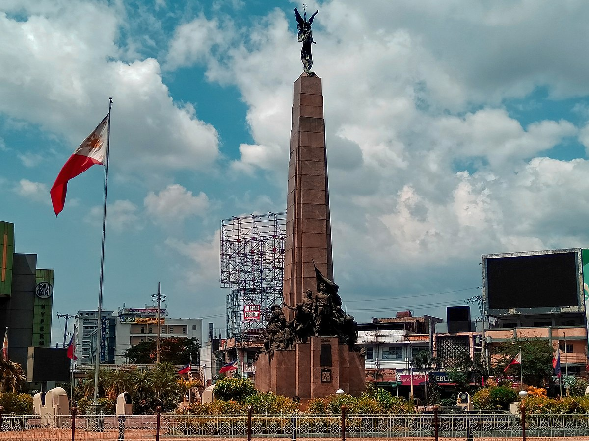

Bonifacio Monument
A landmark symbolizing the heroism of Andres Bonifacio.
SM Grand Central
The Major Landmark of South Caloocan

Caloocan University
A major institution providing quality education in Caloocan.
Mary Help of Christians Parish - Diocese of Kalookan
The Mary Help of Christians Parish is a Catholic church located in Caloocan City, within the Diocese of Kalookan. The parish is dedicated to Mary, Help of Christians, an important title for the Virgin Mary in the Catholic Church.
Caloocan Parks
Recreational spaces for families and the community.
Public Markets
A hub of commerce and livelihood for Caloocan residents.